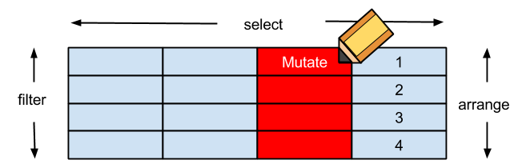

還記得這個新聞吧？ 就從這裡開始

在論述台灣房市之前，身為一個
資料科學家，第一步是了解問題
本次，我們的問題是
房價真的太高了嗎?
還記得這個新聞吧？ 就從這裡開始
從上面新聞所述，所以我們想要:
從上面新聞所述，所以我們想要:
從上面新聞所述，所以我們想要:
即便知道資料在哪，可是資料還是如同
一盤散沙

dplyr 可用類似SQL方法操作data fromexts 處理時間格式好用的套件gdata 可以處理Excel 2007以上的文件quantmod 可以處理股市資料stringr 字串相關處理來上課的，有
福了
DSC2014Tutorial R社群為了這次Tutorial製作的套件，所有的教材都在這了deps <- available.packages("http://taiwanrusergroup.github.io/R/src/contrib")[1,"Imports"]
pkgs <- strsplit(gsub("\\s", "", deps), ",")[[1]]
for(i in seq_along(pkgs)) {
# You can change your favorite repository
if (require(pkgs[i], character.only = TRUE)) next
install.packages(pkgs[i], repo = "http://cran.csie.ntu.edu.tw")
}
install.packages('DSC2014Tutorial',
repo = 'http://taiwanrusergroup.github.io/R', type = 'source')
library(DSC2014Tutorial)
安裝之後, 輸入以下指令就可以打開投影片:
slides("ETL")
ETLETL
結構化資料 STEP1 房貸餘額1 , STEP2 GDP非結構化資料 STEP3新聞分析第一步
請連線到
https://survey.banking.gov.tw/statis/stmain.jsp?sys=100&funid=r100
cl_info_other.csv或是
library(DSC2014Tutorial)
ETL_file("cl_info_other.csv")
至少要記得的 read.table
Cl_info = read.table(file=ETL_file("cl_info_other.csv"),sep=",",stringsAsFactors=F,header=T)
Data Frame,做分割True, 會讓讀入的字串都用Factor形態儲存，那麼資料就會轉為整數儲存與額外的對照表False，表示第一行是不是表格標頭，作為輸出的dataframe欄位名的colnamesView(Cl_info)
str(Cl_info)

直接讀入是否覺得怪怪的?
etl_dt data_dt 是文字但應該是時間bank_code 也是文字但應該是factorlibrary(DSC2014Tutorial)
library(dplyr)
Cl_info = read.table(file=ETL_file('cl_info_other.csv'),header=T,sep=",",stringsAsFactors=F)
Cl_info_part = mutate(Cl_info,data_dt = as.POSIXct(data_dt),
bank_code = as.factor(bank_code),etl_dt = as.POSIXct(etl_dt))
View(Cl_info_part)
str(Cl_info_part)
Extraction與Transformation了！看見資料了!但是剛剛處理過程中的
mutate是什麼?
看見資料了!但是剛剛處理過程中的
mutate是什麼?
在
R中用來做資料清理與資料處理好用的套件dplyr其中之一的函式
接下來我們將介紹三個基本函式

select 函式，用來挑選欄位select 函式，用來挑選欄位資料filter 函式，用來保留要留下的資料列特徵欄位(1/2)mutate 用來增加非彙總計算欄位特徵欄位(2/2)mutate 用來增加非彙總計算欄位排序資料(1/2)arrange 用來重新排序排序資料(2/2)arrange 用來重新排序data_dt,bank_nm,mortgage_balmortgage＿bal大於1千萬的銀行資料mortgage＿bal由小到大，但資料時間data_dt從大到小Cl_info_part2Cl_info_part2 = mutate(Cl_info_part,time= as.POSIXct(data_dt))
讓我們來練習抓下一個資料
GDP
第二步
請連線到 http://ebas1.ebas.gov.tw/pxweb/Dialog/NI.asp
國民生產毛額之處分RStudio 開始處理資料或是ETL_file("GDP.txt")
練習讀入與創建一個
GDP的 data frame
答案
GDP = read.table(file=ETL_file("GDP.txt"),sep=",",stringsAsFactors=F,header=F)
輸入
View(GDP)觀察GDP會發現怎麼前後有很多列的資料是不要的
整理好這個data fromeGDP_part = GDP[5:136,]
colnames(GDP_part) = c("time","GDP","GDP_yoy","GDP_2006","GDP_2006_yoy",
"GDP_minus","GDP_minus_yoy")

rownames(GDP_part) = NULL
View(GDP_part)
另外一個簡單的例子
iris
iris_part <- iris[4:6,]
rownames(iris_part) <- c('a','c','d')
View(iris_part)
# 去除中間不合理的,在數字欄位上與補上百萬
GDP_part2= mutate(GDP_part,GDP = as.numeric(gsub(",", "",GDP))*1000000)
gsub, 替換字元，將原先有問題的,去除as.numeric 將原來的文字形態改成數字
GDP_part3 = mutate(GDP_part2,year=as.numeric(substr(time,0,4)),
season=as.numeric(substr(time,6,6)))
GDP_part4 = select(GDP_part3,year,season,GDP)
substr, 取出特定位置的資料as.numeric, 將文字轉成數字
, , 然後將它轉成數字year,season抽離出來並轉成數字，同時最後資料只保留GDP,year,season擁有了
GDP和房貸餘額，那接下來呢?

非結構化的新聞與股市資料!
第三步
最後一步
每個月的資料每年的資料年份將房貸餘額與GDP的表結合起來
將介紹 group_by, summarize

彙總(1/2)group by 可加先下也可不下，不下的情況是直對接
全部資料做集匯總運算
彙總(2/2)GDP_part5 = filter(summarise(group_by(GDP_part4,year),GDP=sum(GDP)),is.na(year)==F)

可以使用的函數如下所列
4 3

order_by 使用; first(x,order_by=y)order_by 使用; last(x,order_by=y)order_by 使用; nth(x,10))
eg1 = summarise(group_by(Cl_info_part2,time) ,
mortage_mean_bal = mean(mortgage_bal, na.rm = TRUE))
eg2_1 = filter(Cl_info_part2,mortgage_bal >0)
eg2_2 = summarise(group_by(eg2_1,time),count = n())
eg3_1 = filter(Cl_info_part2,mortgage_bal >0)
eg3_2 = mutate(eg3_1,year = format(time,"%Y"))
eg3_3 = summarise(group_by(eg3_2,year),count = n_distinct(bank_nm))
eg4 = summarise(group_by(Cl_info_part2,time),
val = max(mortgage_bal))
eg5_1 = arrange(Cl_info_part2,time,desc(mortgage_bal))
eg5_2 =summarise(group_by(eg5_1,time),val = first(bank_nm))
eg6_1 = arrange(Cl_info_part2,time,desc(mortgage_bal))
eg6_2 = summarise(group_by(eg6_1,time),
val = nth(bank_nm,2))
1-1 水平結合多對多 水平結合多對多 水平結合看得懂在幹嘛嗎?
結合表格by 指出以何欄位作為對照鍵值透過先前創建的x與y，以及交集的鍵值c1
ljxy = left_join(x,y,by="c1") #以X為主
ljyx = left_join(y,x,by="c1") #以Y為主

因為GDP_part5_所俱有的時間點較少，用這個當作主鍵是比較好的.
GDP_part6 = select(mutate(GDP_part5 ,
time = as.POSIXct(paste(year,'1','1',sep='-'))),time,GDP)
t1 = left_join(GDP_part6,Cl_info_part4,by="time")
t2 = filter(t1,is.na(mortage_total_bal)==FALSE)
看一下資料 View(t2)

see1 = filter(mutate(t2,ratio =mortage_total_bal/GDP),is.na(ratio)==FALSE)
利用解釋將圖想要表達的意思更清楚地傳達給觀眾
將所有的解釋與圖表包裝成一個故事，展現出來
iris
iris_part <- iris[4:6,]
rownames(iris_part) <- c('a','c','d')
write.csv(iris_part,file="[想要的目錄]/GG.csv")
R CMD BATCH [該檔案儲存位置]/Script.R
crontab定期執行install.packages("RCurl")
library(RCurl)
DF = read.table(sep=",", header=TRUE,
file= textConnection(
getURL("https://raw.githubusercontent.com/ntuaha/TWFS/master/db/cl_info_other.csv")
))
DF = read.csv(sep=",", header=TRUE,
file="https://raw.githubusercontent.com/ntuaha/TWFS/master/db/cl_info_other.csv",
fileEncoding="UTF-8")